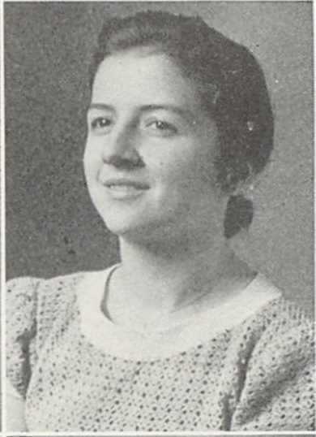

Lillian Hartman was born in Boyertown, Pennsylvania on March 1, 1922. She was the second of six children born to Chester and Lizzie Hartman.

Lillian married Stanley WAKEFIELD in New York City on December 22, 1956. The couple made their home in Hastings-on-Hudson, NY, and Stan became a grand master of the Masons of New York State.Yonkers NY Herald Statesman, Monday, Jan. 7, 1957Dobbs Ferry NY Sentinel, Friday, May 5, 1961
Lillian and Stan are pictured here with Titus Hartman at his home in Hummelstown, PA on June 8, 1988.
Lillian died April 14, 2006 and is buried in the Wakefield family plot at Mount Hope Cemetery in Hastings-on-Hudson.